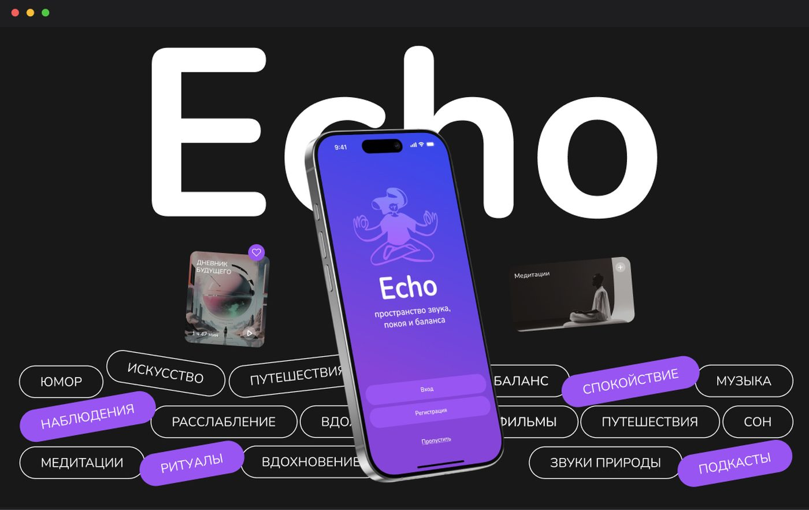

Вводные
Echo — концепт мобильного приложения, объединяющего подкасты, медитации, звуковые ритуалы и личный дневник в одном пространстве. Приложение помогает выбирать контент в зависимости от настроения и времени суток, создавать персональные ритуалы прослушивания и сохранять свои мысли после прослушивания.
Проблема
Аудиоконтент может быть способом расслабиться, получить новые знания или переключиться после насыщенного дня, но пользователь часто самостоятельно ищет подходящий контент и использует разные сервисы для разных задач. При этом выбор подкаста не учитывает текущее состояние человека, а впечатления и мысли после прослушивания остаются за пределами приложения.
Цель
Создать единое пространство для осознанного потребления аудиоконтента, которое учитывает состояние, контекст и потребности пользователя, помогая не только найти подходящий контент, но и сформировать вокруг него персональный ритуал.
Исследование
Для определения ключевых сценариев я провела функциональный и сводный анализ, составила CJM и сформировала персону пользователя.
В качестве основной персоны выступила Алина, 28 лет — менеджер проектов с высокой информационной нагрузкой. Она ищет способы расслабиться, упорядочить мысли и находить время для себя в течение дня. Для неё важны удобство, персонализация и минимальное количество лишних действий.
Анализ показал, что пользовательский опыт не заканчивается на выборе и прослушивании контента. Важными становятся контекст прослушивания, эмоциональное состояние, атмосфера и возможность зафиксировать личные впечатления.
Решение
В основе концепции — идея персонального ритуала прослушивания, который адаптируется под состояние пользователя и его контекст.
В Echo реализованы:
- Эмоциональный подбор — рекомендации подкастов в зависимости от текущего настроения.
- Атмосфера прослушивания — фоновые сцены и звуки, которые поддерживают тему и настроение контента.
- Виртуальные комнаты — пространство для обсуждения подкаста во время или после прослушивания.
- Личный дневник — возможность сохранять заметки и личные впечатления после прослушивания.
- Ритуалы — персональные сценарии прослушивания, привязанные ко времени суток и настроению.
- AI-ассистент — поиск нужной информации внутри подкаста по смысловому запросу пользователя, а не только по точному совпадению текста.
Результат
Подкасты, медитации, фоновые звуки и рефлексия объединены в одном пользовательском сценарии.
Контент подбирается не только по интересам, но и с учётом состояния и контекста пользователя.
Прослушивание превращается из отдельного действия в последовательный сценарий:
выбрать состояние → подобрать контент → погрузиться → обсудить или осмыслить → сохранить впечатления.